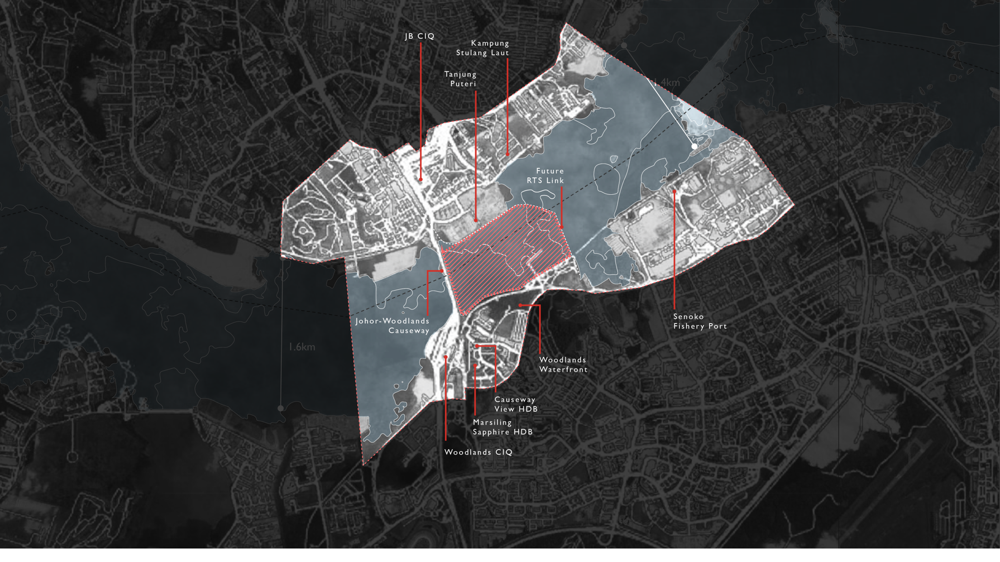
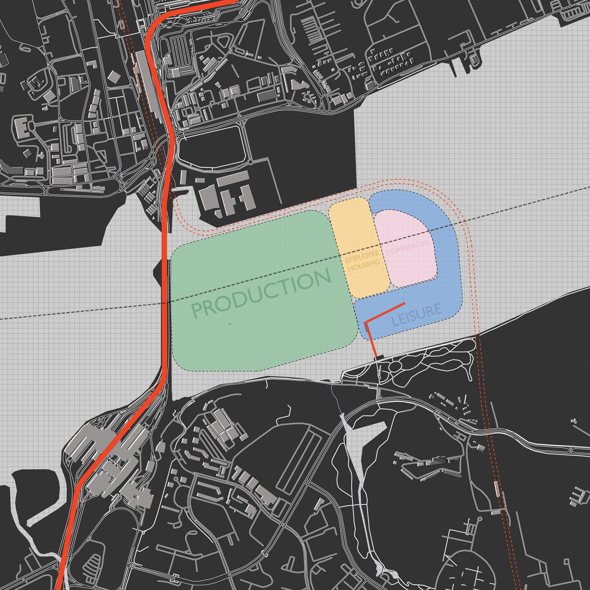
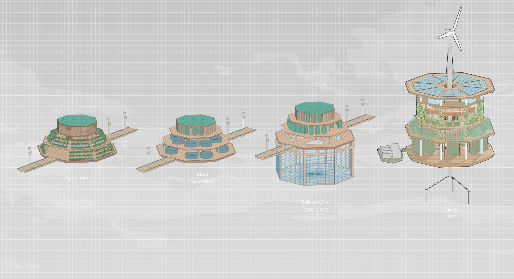
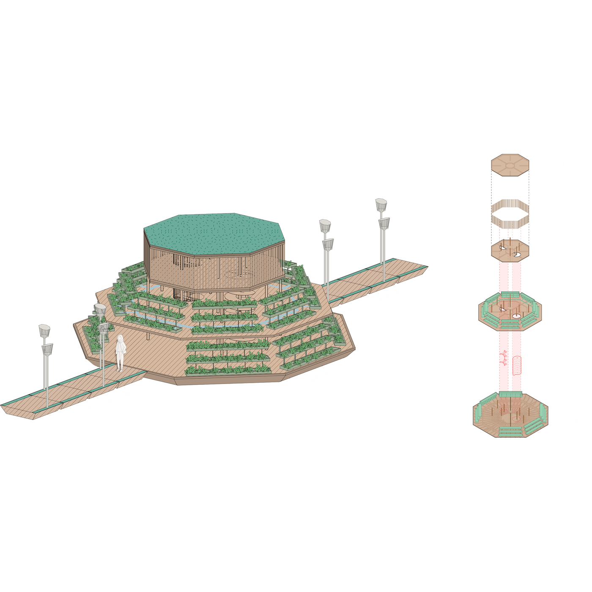

Reconnecting Borders: Shared Food Hub on the Straits of Johor
Summary
Borders compartmentalise people, restricting their access to resources. Different border conditions exist. Some are violent and offer zero access, while others allow for an uninhibited flow of people across the two sides. In the case of Malaysia and Singapore, despite their historical affinities, the two neighbours have long contested over the Johor Straits. Consequently, what was once unified are today edge communities that lead contrasting lifestyles. The Johor Straits is stagnant, devoid of cross-border activity other than the commute of workers and delivery of goods. Is there a way to bridge this disparity and regain the lost connectedness?With the Rapid Transit System between Johor and Woodlands set to commence operations in end 2026, the space bounded by this transit link and the existing Causeway creates a safe enclosure where communities can come together. This thesis posits that the shared food culture and common goal of food security can be manifested to enliven the Singapore-Malaysia border condition. This thesis looks into the shared goals of food security and common food heritage as a driving force to connect Malaysians and Singaporeans together. Carried out as a phased development, this project proposes a shared food hub across the Straits of Johor.
About Me
Growing up by the border, I saw the rapid changes that took place across both nations. To my north, I witnessed the land reclamation and construction of new condominiums in Johor Bahru and to my west, the development of factories around Kranji. On special occasions, I was treated to a fine selection of fireworks display on both sides.The process of completing this thesis offered me an opportunity to take a nostalgic look into how things were, and express my findings, with a sense of hopefulness, as to what they could be. As I move out and move on to a new phase in life, I present this thesis as a final adieu to my childhood home.
Name
Afiffah Ab Ghapar
Mentor
Yeo Kang Shua
Typology
Institutional, Community
Site Location
Straits of Johor

![]()
![]()
![]()
![]()

Site Selection
The site selection takes into consideration 3 key factors: connectivity, environmental impact and security. The existing Causeway link and the future Rapid Transit System offer supporting infrastructural systems that enable the masses to reach the proposed community spaces. Mangrove areas along the Straits are regarded as sacrosanct spaces and the site seeks to maintain a safe distance from these wetlands. Lastly, while both nations are committed to friendly relations, there may be times the rivalrous nature take front seat. To mitigate security concerns, the development seeks to test the water in a bounded space.

Phased Development
Phase I: Governance & Infrastructure
During the first phase, both governments agree and work towards a masterplan on the Straits of Johor, to create a productive, self-policing community.The masterplan focuses on creating four zones – production, housing, commercial and leisure.Phase II: Developing the Nuclei
Each country develops its own nucleus to strengthen their respective talents and areas of specialty. Singapore strengthens her research capabilities with a research centre for innovative farming methods and Malaysia trains talents in advanced farming methods. Jobs are created for Malaysians and new leasable spaces are created for Singapore.Phase III: Improving Connectivity
Once critical mass is reached, inter-nucleus connectivity is enhanced. Commercial transactions are conducted along the border. Sharing of research work occurs and communities together build spaces to meet their needs e.g retail spaces, central food hall, market hall. Ferry stations are built along the central urban waterway, including one intermdediate station linked to the RTS.Phase IV: Productive Community
The commercial centre grows to support the productive spaces. The market hall establishes itself as the one-stop distribution venue of fresh produce. The food hall connects people through shared cuisines. In this food hub, there is no notion of nationality. In the leisure zone, spaces for free public entry is introduced to offer a floating culinary experience. Border-free housing options are created to serve the employees within this community.


These self-assembling boats are utilized across the whole site, and they serve as a mechanism to connect different pods together. The octagonal pods can be connected to give different spatial configurations, based on the farm's requirements.
Production Modules
These modules comprise of a series of self-assembling boats and the octagonal pod.These self-assembling boats are utilized across the whole site, and they serve as a mechanism to connect different pods together. The octagonal pods can be connected to give different spatial configurations, based on the farm's requirements.
Agriculture Module
In the agriculture pod, spaces for outdoor vertical farming as well as indoor farming are provided.Aquaculture Modules
There are two types of Aquaculture modules. The first utilizes indoor tanks for fish or prawn rearing. By using water tanks in a sheltered space, resource inputs can be managed more efficiently and the fishes are less susceptible to erratic weather or sea conditions. The second type uses a submersible fish cage. It does not only offer options for fish rearing but also creates a bounded space for mussel or kelp farming.Energy Farm
The energy farm aims to provide the energy required to power the different modules. Wind Energy, solar energy and biowaste are harvested in this all-in-one energy farm. Intensive algae farming is also introduced to be a source for biofuel production. The energy farms are placed in multiple areas across the whole site.



Employee Housing
The production modules and farms offer job opportunities for people from Malaysia and Singapore. To facilitate their daily lives, housing options are introduced. These units also serve as supplementary housing options to the thousands of workers who are already commuting between Singapore and Malaysia daily.Food Hub
The food hub will be paired with an adjacent ferry station. This ferry station is one of the four stations that are introduced across the urban waterway. The food hub consists of a market hall, a food hall, restaurants, as well as cloud kitchens.Market Hall
On level 1, fresh produce from the farms come together to be sold and shared with the community on both sides of the border. Three different types of stalls can be found. The sundry goods are located along the major public axis as to liven up the area regardless of the time of the day.The Makan Place
The food hall is located on level 3. Here 49 hawkers work together to sustain the shared food culture. Adjacent to the food hall is a spice lab and farm, that can also be used as a space for hawkers to experiment with new dishes. The food hub is well equipped with a series of vertical systems that aid delivery of goods and packed meals.Cloud Kitchens
As the pandemic has increased consumers' tendency to order in rather than eat out, the food hub serves to facilitate food delivery. The cloud kitchens offer options for famous eateries located on the mainland to come and serve their neighbours across the border. With cloud kitchens, F&B shops need not provide a dedicated eating space for their customers. The dumbwaiter and the vertical conveyor belt system help to quicken the process.